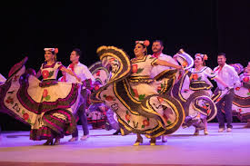

La danza ha estado evolucionando con el paso del tiempo. Desde la prehistoria, el ser humano ha tenido la necesidad de comunicarse corporalmente con movimientos que expresaban sentimientos y estados de ánimo. Algunas pinturas rupestres encontradas muestran dibujos de figuras danzantes, las cuales se asocia con ilustraciones de rituales. Estos primeros movimientos rítmicos sirvieron igualmente para ritualizar acontecimientos importantes (nacimientos, defunciones, bodas).
Muchas maneras tempranas de la música y la danza se han creado y realizado en conjunto. Este desarrollo ha continuado vinculado a través del tiempo con las formas de danza/música, tales como: vals , tango, disco, salsa, electrónica, y hip-hop. Algunos géneros musicales tienen una forma de danza en paralelo, como la música barroca y danza barroca; mientras que otros, como la música clásica y ballet clásico, se han desarrollado por separado. Aunque la danza es acompañada a menudo por la música, también pueden ser presentada de forma independiente o proporcionar su propio acompañamiento (claqué). El género de música utilizada en la danza no necesariamente llevará el mismo estilo; la danza puede llevarse a cabo sin la música, el bailarín se moverá con su propio ritmo o con el sugerido por el coreógrafo.
El ritmo y la danza están profundamente vinculados en la historia y la práctica. El bailarín estadounidense Ted Shawn escribió; "La concepción del ritmo que subyace a todos los estudios de la danza es algo de lo que podríamos hablar para siempre, sin agotar el tema".[3] Un ritmo musical requiere dos elementos principales; primero, un pulso que se repite regularmente (también llamado "tiempo" o "tactus") que establece el tiempo y, segundo, un patrón de acentuación y silencios que establece el carácter del compás o patrón rítmico básico. El pulso básico tiene aproximadamente la misma duración que un simple paso o gesto. Un ritmo básico de tango Los bailes generalmente tienen un tiempo y un patrón rítmico característico . El tango, por ejemplo, se suele bailar en un tiempo de 2 x 4 a aproximadamente 66 latidos por minuto. El paso lento básico, llamado "lento", dura un tiempo, de modo que un paso completo "derecha-izquierda" es igual a un 2 x 4. La caminata básica hacia adelante y hacia atrás de la danza se cuenta así - "lento-lento" - mientras que muchas figuras adicionales se cuentan "lento - rápido-rápido".
